Nossa história, ainda curtinha
Eu sou o homem mais feliz do mundo há:
0
Dias
0
Horas
0
Minutos
0
Segundos
1 de janeiro de 2026
Primeira vez que nos falamos
Cantadinha idiota
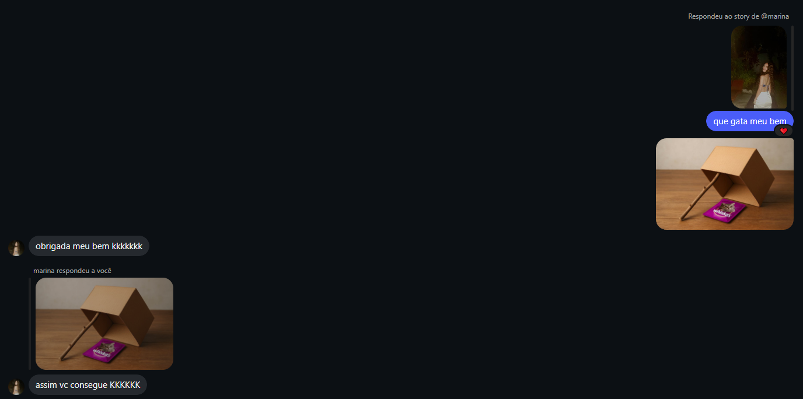
7 de janeiro de 2026
Primeiro “eu te amo”
E pra sempre ficou.
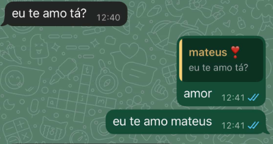Tudo que merece ouvir 💌
Todas as fotos suas que mais amo


 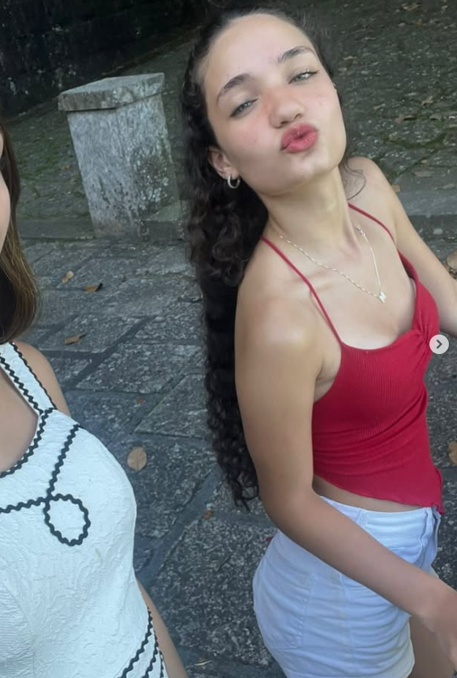
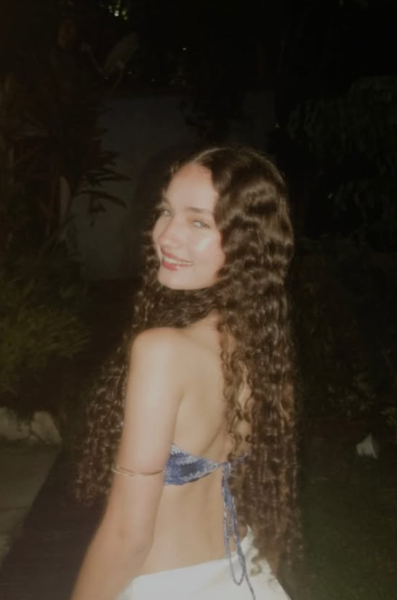
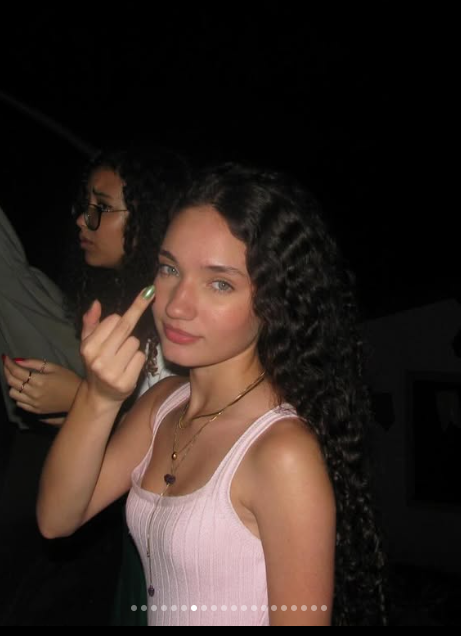
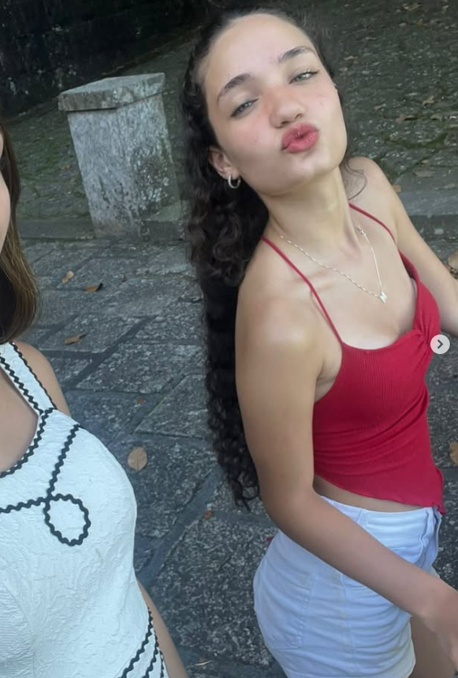
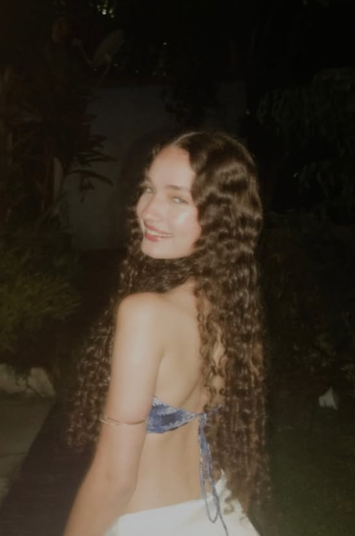
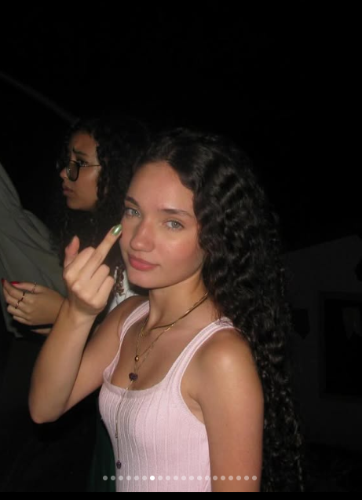
 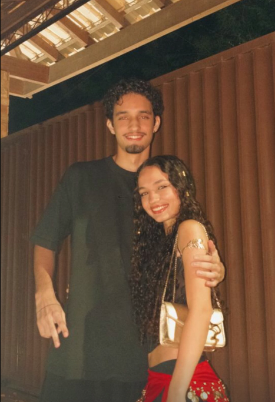
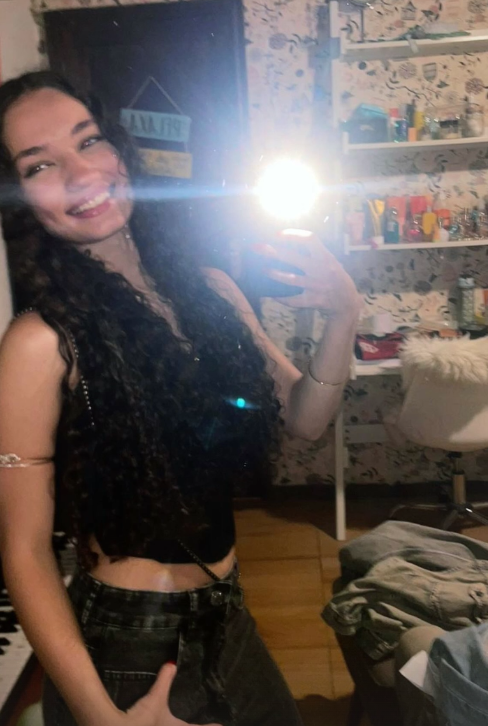
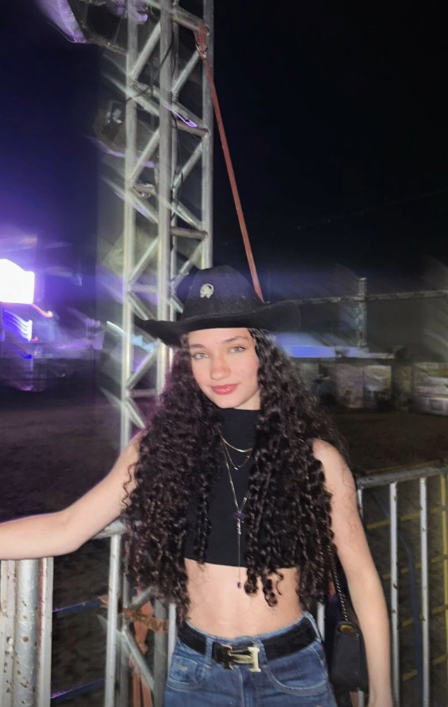
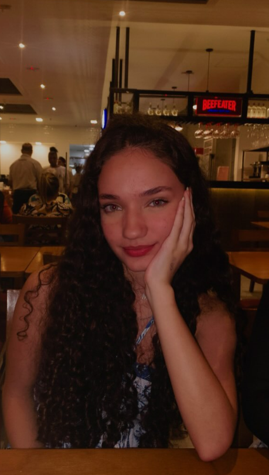
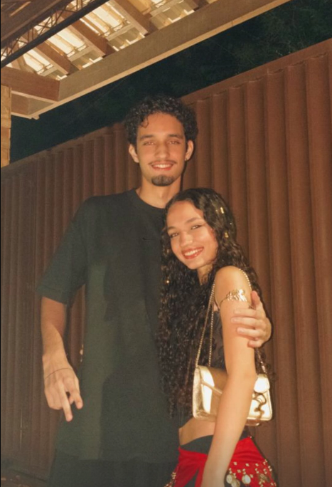
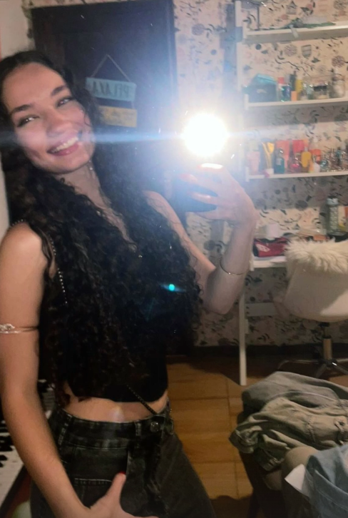
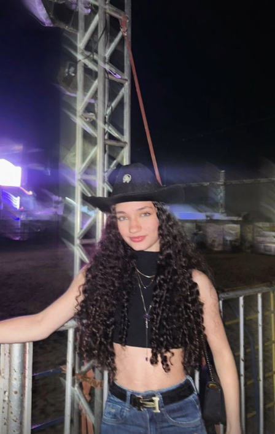
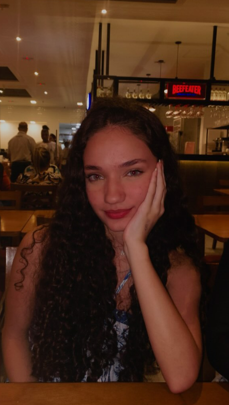
Músicas que me lembram você
Cupom do Dia 🎟️
CUPOM EXCLUSIVO MARINA
Carregando cupom...
Válido somente hoje!
Novo cupom em:
00:00:00Central de Atendimento 💌
Sua observação será direcionada para o CAMNL (Centro de Atendimento da Minha Namorada Linda), digite abaixo o seu desejo, elogio ou reclamação: